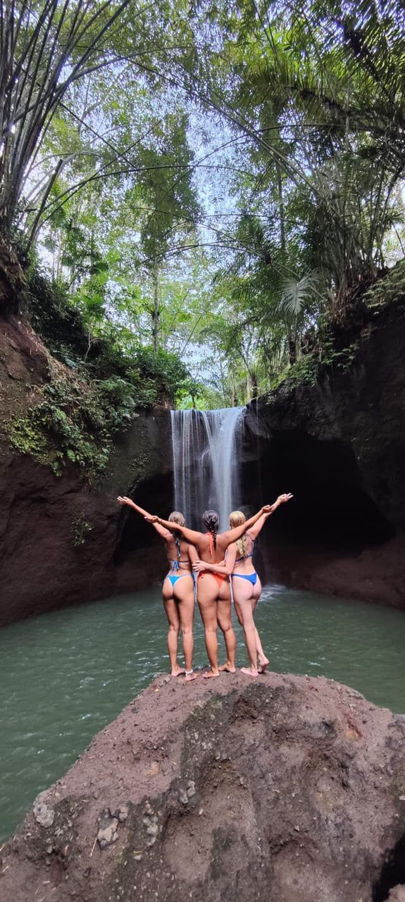
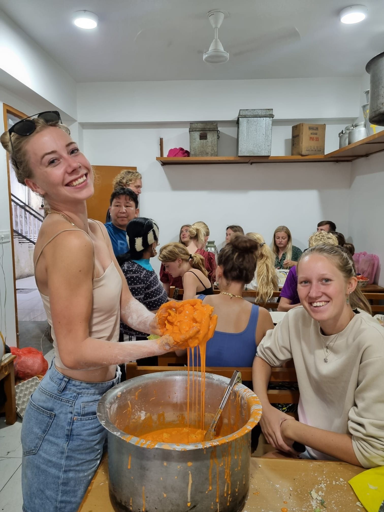
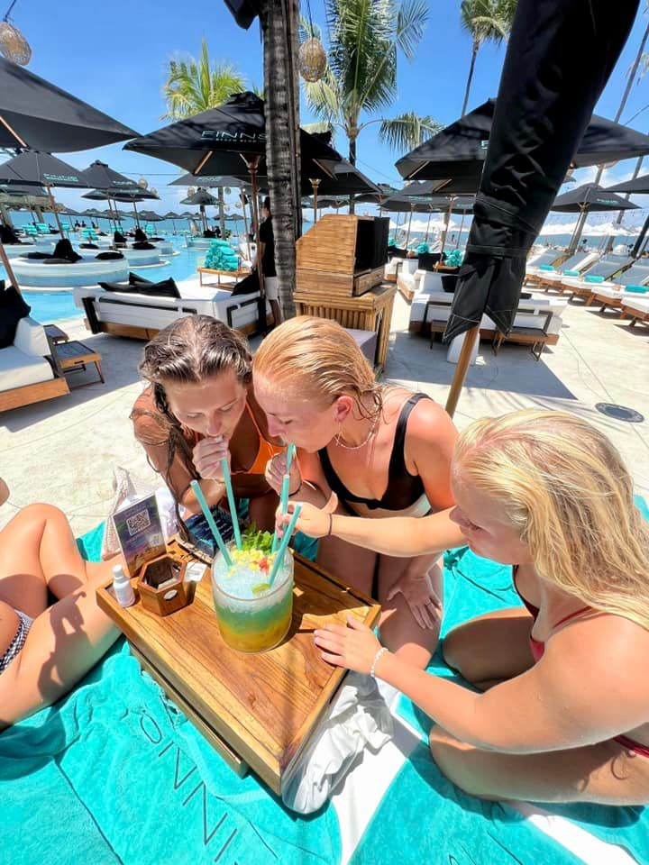

“Jeg er blevet et modigere menneske”
Caroline Marcussen, 20 år
Ophold: Hawaii, Japan, Australien, Bali & Gili Islands
Varighed: 3 måneder
Fag: Selvudvikling, Teambuilding, Sport & Adventure
Dato: 25. Marts 2026
Inden jeg tog afsted, havde jeg virkelig mange tanker. Jeg glædede mig selvfølgelig, men jeg var også nervøs. Ikke sådan “jeg vil ikke afsted”-nervøs, men mere den der følelse af: Hvad nu hvis jeg ikke falder til? Hvad nu hvis alle andre kender nogen? Hvad nu hvis jeg ikke er god til at være i en stor gruppe?
Jeg tror, jeg havde brug for at komme lidt væk hjemmefra. Ikke fordi der var noget galt derhjemme, men fordi jeg gerne ville prøve noget andet. Møde nye mennesker, opleve en anden del af verden og mærke mig selv i nogle nye rammer.
Allerede efter de første par dage kunne jeg mærke, at det her ophold kom til at gøre noget ved mig. Man bliver kastet ind i et fællesskab ret hurtigt, men på en virkelig god måde. Vi spiste sammen, rejste sammen, havde undervisning sammen og oplevede ting, jeg aldrig havde prøvet før. Det gjorde, at man hurtigt kom tæt på hinanden.


Noget af det, jeg blev mest overrasket over, var hvor trygt det føltes. Selvom vi var mange nye mennesker samlet, var der plads til at være lidt usikker i starten. Der var ikke en forventning om, at man skulle være mega udadvendt eller have styr på det hele. Man kunne bare være der, som man var.
Undervejs blev jeg skubbet ud af min komfortzone mange gange. Ikke på en ubehagelig måde, men på en måde hvor jeg bagefter tænkte: Okay, det kunne jeg faktisk godt. Det kunne være i undervisningen, i samtaler med de andre eller i situationer, hvor vi skulle prøve noget nyt. Hver gang voksede jeg lidt.
Jeg lærte at sige mere ja. Ja til oplevelser, ja til nye mennesker og ja til at være lidt mere åben, end jeg plejer. Jeg tror, jeg fandt ud af, at man ikke behøver vente med at gøre ting, til man føler sig helt klar. Nogle gange bliver man først klar, når man står midt i det.
Fællesskabet betød virkelig meget. Det var ikke bare de store oplevelser, der gjorde indtryk, men også alle de små ting. Snakkene om aftenen, grinene på de lange transportdage, undervisningen, hvor man pludselig lærte noget om sig selv, og følelsen af at være en del af noget.
Da jeg kom hjem, kunne jeg mærke, at jeg havde ændret mig. Ikke på sådan en dramatisk måde, men jeg følte mig mere modig. Mere sikker på mig selv. Jeg havde fået en erfaring med, at jeg godt kan træde ind i noget nyt, selvom det føles lidt skræmmende i starten.
Det er nok det vigtigste, jeg har taget med mig fra opholdet: at jeg tør mere, end jeg troede. Og at man nogle gange skal rejse lidt væk for at opdage, hvad man faktisk har i sig.


Mange kærlige hilsner,
Caroline
fra dette ophold